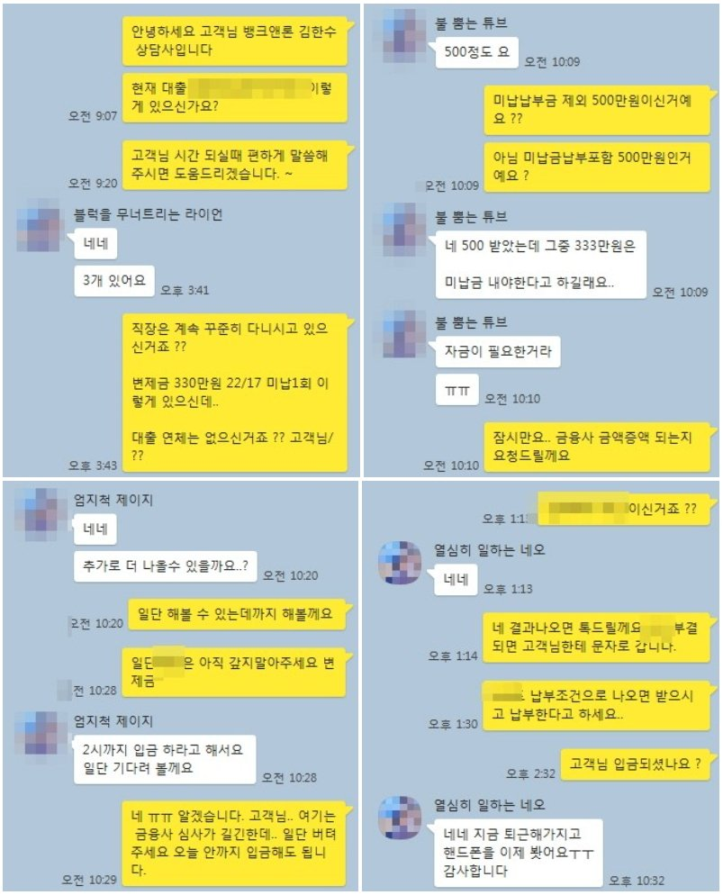

기대출 2100만원 변제금 330만원 개인회생 직장인 추가자금 1100만원 대출 승인사례!!
안녕하세요 뱅크앤론 김한수 상담사입니다.
5월19일 부처님 오신날 잘 보내주셨나요? ^^ 이번 5월달은 유독 빨리가네요...
오늘은 변제금이 많고 기대출 2100만원이 있는 고객님 사례를 통해 개인회생 대출 승인사례 안내해드리겠습니다.
고객님께서는 개인회생 동시진행 통해 대출 받으셨습니다.
고객님께서는 4대보험 가입 직장인 재직10년 연봉 3600만원 개인회생 변제금 330만원 22/17회 납부 미납1회 기대출은 대부업 3군데 각각 700만원씩 총2100만원 채무를 가지고 계셨습니다.
고객님은 미납금 제외 추가자금이 500만원 소액이 필요해 대출 문의주셨는데.. 개인회생 대출은 미납이 있으면 미납납부조건으로 나올 수 밖에 없습니다. 그 점을 고려해 먼저 A금융사 대출 승인 후 미납 납부를 안한 상태에서 추가로 동시 B금융사 통해서 600만원 추가대출 승인 도움드렸습니다. 총 1100만원 승인 됐고 미납납부330만원 제외하면 생활자금 770만원 사용할 수 있게 도움드렸습니다.
변제금이 330만원이지만 아무래도 회생 5회차 납았고 재직이 10년이여서 금융사에서 긍정적으로 봐서 대출을 도움드렸습니다.
아래는 저와 고객님 대화 내용입니다. 회생대출이나 회복대출 이외에 주부및 담보대출 등 문의주시면 금융사 통해서 최대한 도움드리겠습니다.

[출처] 기대출 2100만원 변제금 330만원 개인회생 직장인 추가자금 1100만원 대출 승인사례!! (뱅크앤론 (직장인대출,개인회생자대출,개인회생대출 등..)) | 작성자 뱅크앤론 김한수